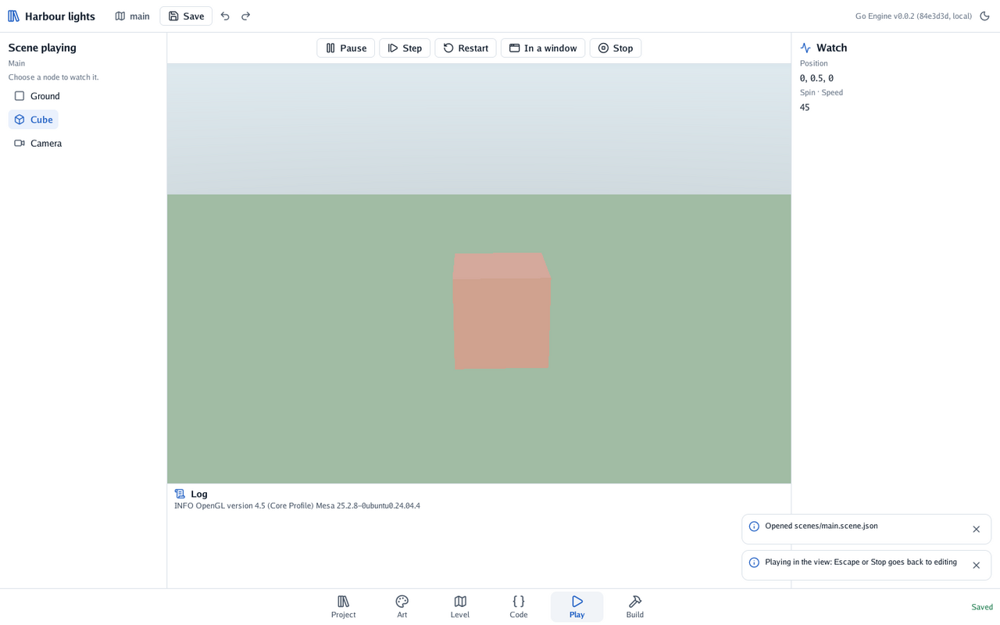
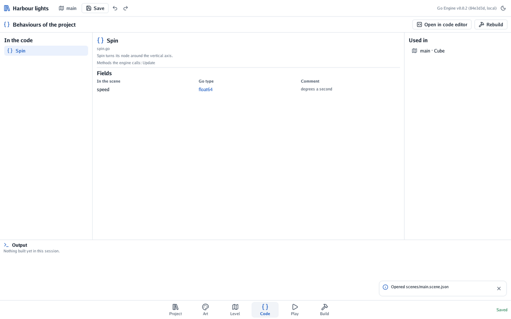

In fifteen minutes you install Go Engine, make a project, play its first scene in the editor and change what its code does. Nothing here needs a game idea yet.
sudo apt install gcc libgl1-mesa-dev xorg-dev libwayland-dev libxkbcommon-dev (Debian, Ubuntu); on macOS, xcode-select --install;
on Windows, the gcc of MSYS2 (Windows is still to be tried).go install github.com/akrck02/go-engine/cmd/go-engine@latest
This puts a program called go-engine in Go’s bin folder (go env GOPATH, then bin). If the
shell cannot find it, add that folder to your PATH.
go-engine new ~/games/harbour "Harbour lights"
The second word is the game’s name, as players will see it. A project is a folder with a Go module
inside; the command writes it, fetches the engine as go does any module, and opens the editor:
| File | What it is |
|---|---|
engine.json |
The game’s name and the scene it starts with |
scenes/main.scene.json |
The first scene: a ground, a cube and a camera |
main.go |
Carries the scenes and assets inside the game, and starts it |
spin.go |
A first behaviour: the code that turns the cube |
editor.go |
Puts the editor inside the game while you make it |
Checkpoint: the editor shows a coloured cube on a green ground.
Next time, open the project with go-engine ~/games/harbour. On a computer with no screen (a
server), go-engine new -open=false makes the project without opening the editor.
The bar at the bottom changes between six workspaces, one job each. The keys 1 to 6 do it too.
| Workspace | What it is for |
|---|---|
| Project | The project’s files: pictures, models, scenes, and its settings |
| Art | Cutting a picture into frames for animations, or into tiles for levels |
| Level | Arranging a scene: the nodes on the left, the view, the inspector on the right |
| Code | The behaviours the project’s Go code declares, and where they are used |
| Play | Playing the scene, with a pause, a step of one frame, and a log |
| Build | Making the game for a computer, the 3DS or an Android phone |
In Level, drag the view to turn round the scene, scroll to come closer, and click a thing in it to choose it. Each thing in a scene is a node: the ground, the cube and the camera are three, listed on the left. The chosen node’s inspector on the right shows where it is, what it is, and its behaviours.
Press Play in the bar at the bottom (or 5): the scene starts playing at once, through its camera, and the cube turns. Play always plays the scene as it is now, saved or not.

Checkpoint: the cube turns slowly. Stop (or Escape) goes back to the workspace you were in, with the scene as it was before playing.
Back in Level, choose the cube. Its inspector shows the Spin behaviour with a field, speed, at 45. Make it 180 and play again: the cube spins four times as fast.
That field comes from the code. Open spin.go in your code editor:
// Spin turns its node around the vertical axis.
type Spin struct {
Speed float64 `json:"speed"` // degrees a second
}
// Update runs every frame, with the seconds since the last one in context.Delta.
func (spin *Spin) Update(context *engine.Context) {
context.Node.Transform.Turn(space.Up, spin.Speed*context.Delta)
}
Every exported field of a behaviour is a field in the inspector, named by its JSON name. Update
runs every frame; context.Delta is the seconds since the last frame. main.go registers the
behaviour, so scenes can name it:
engine.Register(Spin{})
Make the cube bob up and down as it turns. Add a field and two lines to spin.go:
import (
"math"
"github.com/akrck02/go-engine/engine"
"github.com/akrck02/go-engine/space"
)
type Spin struct {
Speed float64 `json:"speed"` // degrees a second
Bob float64 `json:"bob"` // metres up and down
}
func (spin *Spin) Update(context *engine.Context) {
context.Node.Transform.Turn(space.Up, spin.Speed*context.Delta)
context.Node.Transform.Position.Y = 0.5 + spin.Bob*math.Sin(context.Time*3)
}
context.Time is the seconds since the scene started. The editor runs inside your game, so it
needs the game built again: open Code (or 4) and press Rebuild, which glows while the code
is newer than the game. It saves the scene, builds, and reopens the editor where you were; if the
code does not compile, the error shows under Output, and the editor stays as it was. Open in
code editor opens the project in the editor engine.json names (codeEditor), or in $VISUAL.

Checkpoint: the cube’s inspector now has a bob field. Make it 0.5 and play: the cube bobs.
In Build (or 6), the card This computer has Build, which writes the game into the
project’s build/ folder, and Play, which opens it in a window of its own. From a terminal,
go run . in the project’s folder plays it too: the editor only starts when go-engine asks.
The other cards make the game for the Nintendo 3DS and for Android phones. The tools they need are set up in Tools, the tab beside Platforms at the top of Build; the guides explain them.